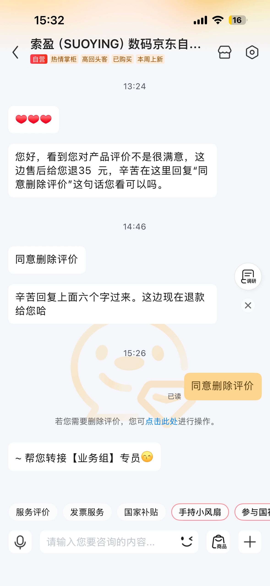

很简单的一件事情，在网上购物写了个差评，商家说退款不退货删除差评，我同意了。

在这个事情上，还是有点受震撼的。我并不是所谓的为了钱放弃说真话的权利，而是我忽然觉得，真相不重要，说真话不重要。
我不在乎买这个商家商品的人，他们是否知道真相、是否觉得吃亏。我丝毫没有兴趣教育别人，或者帮助别人排雷，我为什么要有这种助人情节？
而且我也没有理由影响人家的生意，愿意买的买，愿意卖的卖，社会资金流转起来了，完全是好事，对我来说无所谓。
我脑海中浮现出的是崔永元，他爱说真话、揭露真相，然后呢，下场是什么呢，为什么要说真话、让大众知道真相呢？真相不重要，大众也不在乎。大众本来就是愚昧的。他们的亏损与我无关。